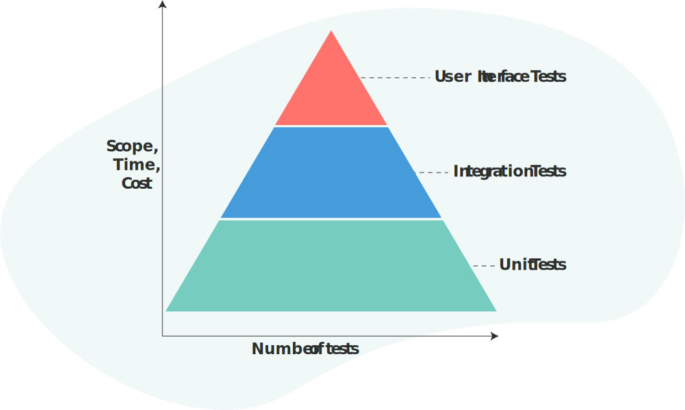
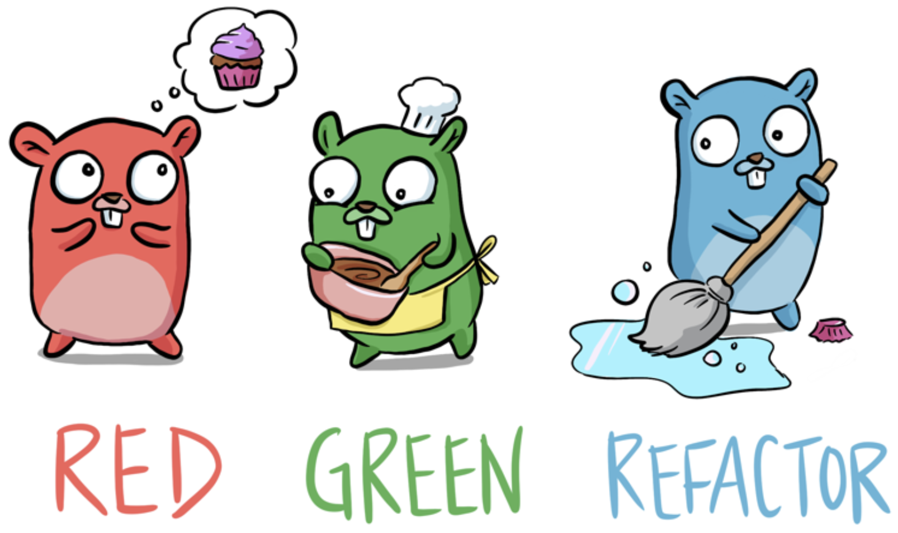
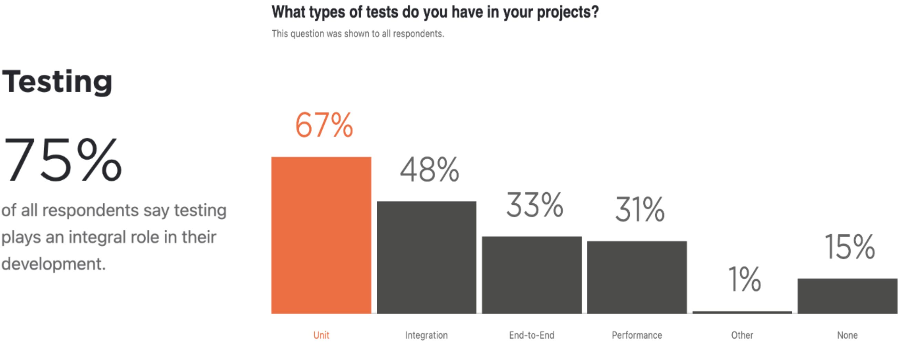
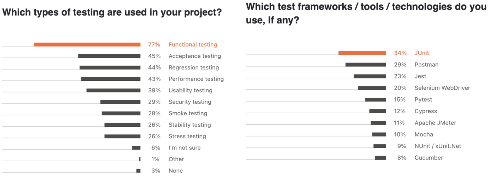
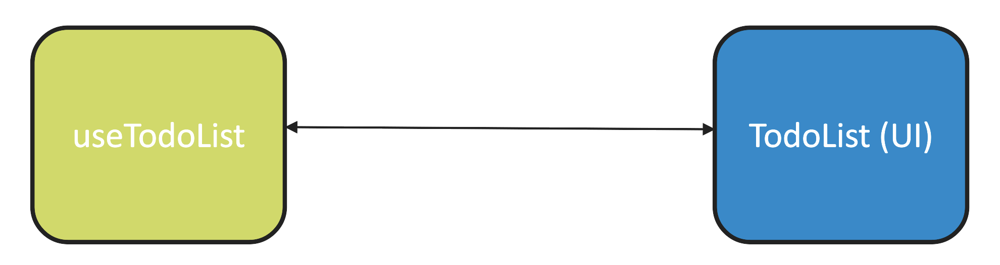
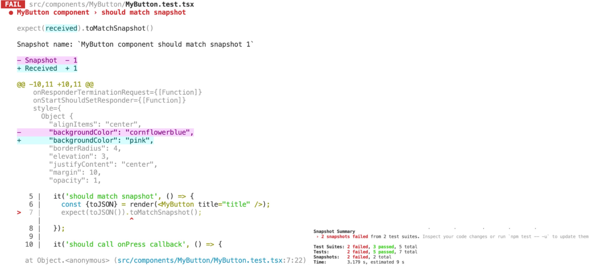

AGENDA
- Testing in software development
- Testing Pyramid
- Unit tests
- TDD & BDD
- Testing statistic
- Testing libraries
- Jest as a testing framework
- Husky
Testing role in Software Development
- Testing is about verifying that what was specified is what was delivered.
- The testing is important since it discovers defects/bugs before the delivery to the client, which guarantees the quality of the software.
Major benefits of software testing
- Launch a flawless software application
- Prevent targeted malware attacks
- Improves the user experience
- Curtail maintain costs
- Improve time-to-market
- Enhance quality of apllication
- Boost competitiveness
The scope of Testing
- The test scope defines what areas, features, and functionalities of an application should be tested
Testing Pyramid
Benefits of unit tests
- Save development time
- Provide quick access to code documentation
- Contribute to code quality
- Improve application architecture
- Debug process
- Reduce costs in long run
Impacts of neglecting unit tests
- The risks of simple mistakes leaking to the end user significantly increase in the absence of unit tests.
- Skipping unit tests quickly turns fresh code into legacy code, which is harder to maintain.
TDD VS BDD
| TDD | BDD |
|---|---|
|
TDD refers to the practice of writing a piece of code only if the automated test has failed |
BDD is a process that promotes collaboration between developers, testers and customer service personnel during product development |
|
Developers are the key participants in TDD |
Developers, customers and QAs are the key participants |
|
Mainly concentrates on unit tests |
Mainly concentrates on system requirements |
|
Point of inception is a test case |
Point of inception is a test scenario |
|
TDD is a development practice |
BDD is a team methodology |
|
Collaboration is limited to developers in TDD |
Collaboration is required by all stakeholders in BDD |
TDD is RED-GREEN-BLUE development
Testing statistic
Testing statistic
Writing testable code
To make your app more testable, start by separating the view part of your app from your business logic and app state.
Testing libraries

Why Jest?
- Facebook developed the Jest unit testing framework.
- The default template of React Native ships with Jest testing framework.
How to set up Jest?
After command 'react-native init' The following configuration should be automatically added to your package.json file:
{
"scripts": {
"test": "jest",
},
"jest": {
"preset": "react-native",
}
}
jest.config.js and jest.setup.js files
A list of paths to modules that run some code to configure or set up the testing environment. Each setupFile will be run once per test file.
module.exports = {
roots: ['/src'],
collectCoverage: true,
coverageThreshold: { ... },
preset: 'react-native',
setupFiles: ['jest.setup.js'],
setupFilesAfterEnv: ['/src/globalMock.js'],
};
Structuring Tests
beforeAll(() => {
// ...
});
afterAll(() => {
// ...
});
describe('Our component', () => {
beforeEach(() => {
// ...
});
it('should test this', () => {
// ...
});
});
Expect
expect(value)
expect.anything()
expect.any(constructor)
.not
.toBe(value)
.toHaveBeenCalled()
.toBeLessThan(number | bigint)
.toBeNull()
.toContain(item)
.toEqual(value)
.toMatch(regexp | string)
.toMatchSnapshot(propertyMatchers?, hint?)
.toThrow(error?)
Mock & Stub
- The purpose of both is to eliminate testing all the dependencies of a class or function so your tests are more focused and simpler in what they are trying to prove.
- Stub is for replacing a method with code that returns a specified result: initialize -> exercise -> verify.
- Mock is a stub with an assertion that the method gets called: initialize -> set expectations -> exercise -> verify.
- Stubs don't fail your tests, mock can.
The Jest Object
- Usually app uses external dependencies and services.
- Mocking helps to replace some dependency of your code with your own implementation to avoid network requests calling/returning different data every time and etc.
// Mock functions
jest.mock(moduleName, factory)
jest.unmock(moduleName)
jest.requireActual(moduleName)
jest.resetModules()
jest.isolateModules(fn)
// Mock modules
jest.fn(implementation?)
jest.spyOn(object, methodName)
jest.clearAllMocks()
jest.resetAllMocks()
jest.restoreAllMocks()
Snapshots
- Snapshot tests are used when you want to make sure your UI does not change unexpectedly.
- A snapshot test renders a UI component by generating a serializable value for your React tree -> takes a snapshot -> compares it to the stored snapshot file.
- The test will fail if the two snapshots do not match.
- However snapshots themselves do not ensure that your component render logic is correct.
- Use small snapshots because large snapshots can quickly become hard -> keep no-large-snapshots rule.
it('should match snapshot', () => {
const {toJSON} = render(Test coverage
- With that being said it is generally accepted that 80% coverage is a good goal to aim for.
- Trying to reach a higher coverage might turn out to be costly, while not necessary producing enough benefit.
- 100% unit test coverage does not mean we had good tests, or even that the tests are complete.
- The tests could be missing important data and only testing with data that succeeds, failing to test data that causes failures.
- Merely executing the code without checking its functionality still counts in the coverage metrics.
When tests fail
Husky
Husky improves your commits and more.
You can use it to lint your commit messages, run tests, lint code, etc... when you commit or push. Husky supports all Git hooks.
"husky": {
"hooks": {
"pre-commit": "YOUR_COMMAND",
"pre-push": "YOUR_COMMAND"
}
}